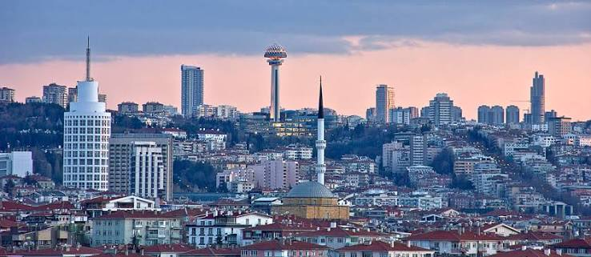
Gelişen OlayAnkara'da ulaşım ve kent yaşamına yönelik yeni düzenlemeler başladı
Başkentin farklı noktalarında trafik akışını, toplu ulaşımı ve yaya hareketliliğini rahatlatmaya yönelik çalışmalar sürüyor.
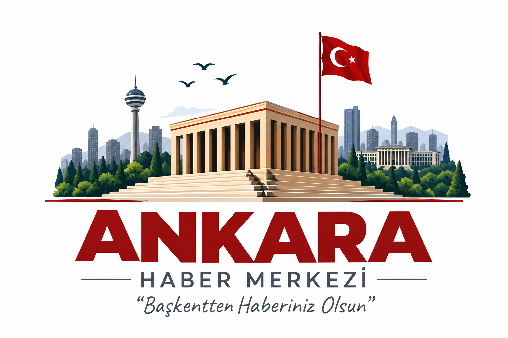
Rüzgâr 14 km/s
Nem %42

Gelişen OlayBaşkentin farklı noktalarında trafik akışını, toplu ulaşımı ve yaya hareketliliğini rahatlatmaya yönelik çalışmalar sürüyor.

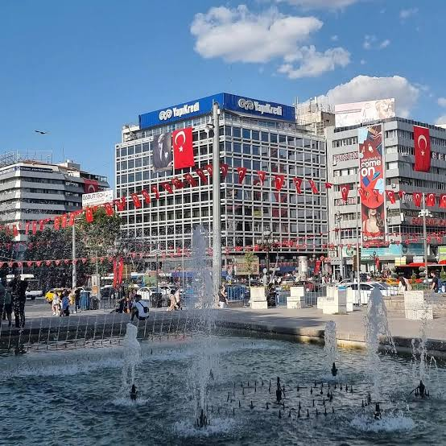
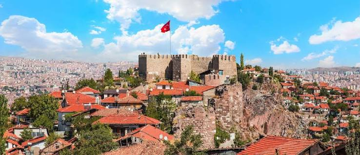
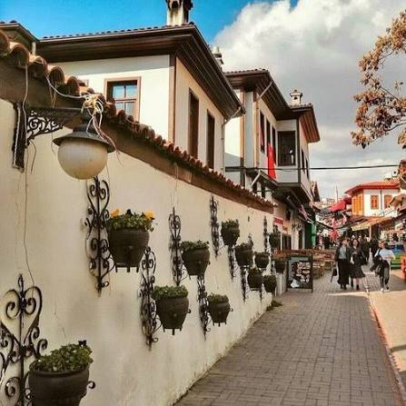
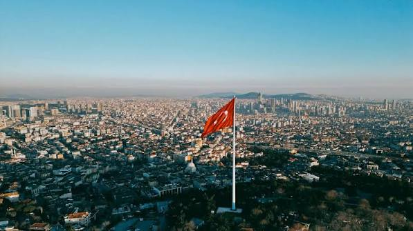
ÇANKAYA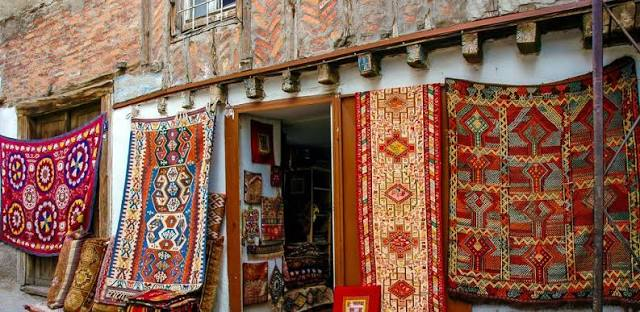
KEÇİÖREN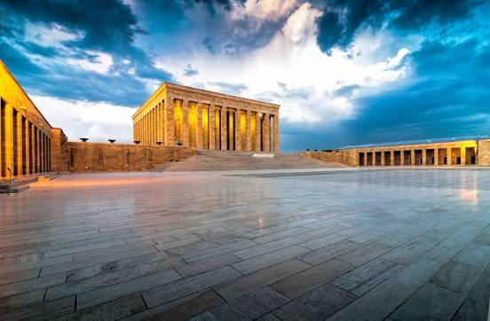
YENİMAHALLE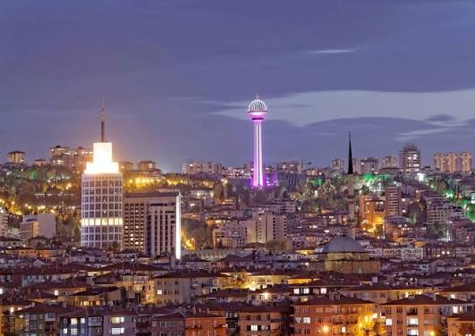
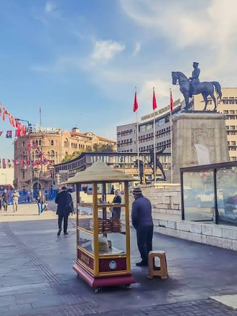
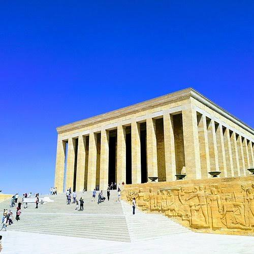
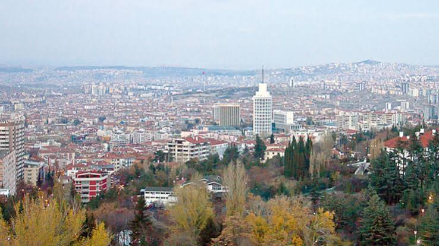
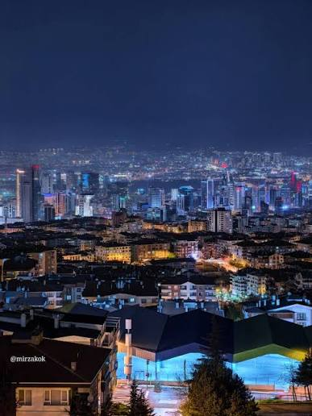
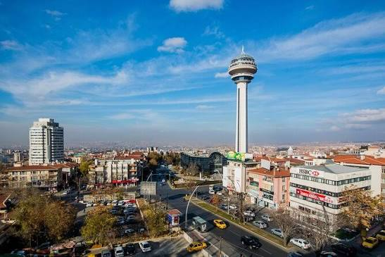
Başkentte şehir yaşamından kareler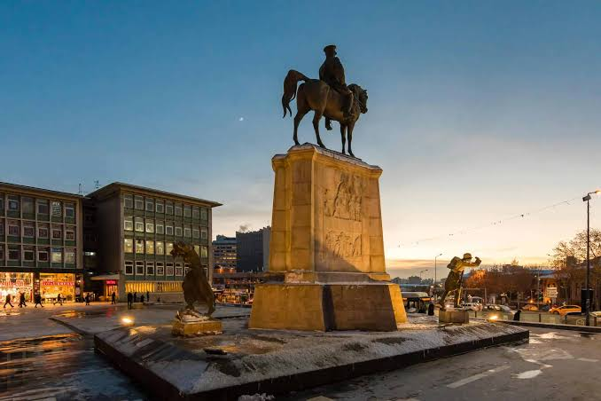
Ankara'dan günün fotoğrafıBaşkentin ulaşım geleceği ve yeni kent projeleri
İlçeler, müzeler, parklar ve şehir yaşamı
Ankara'nın en güzel kareleri